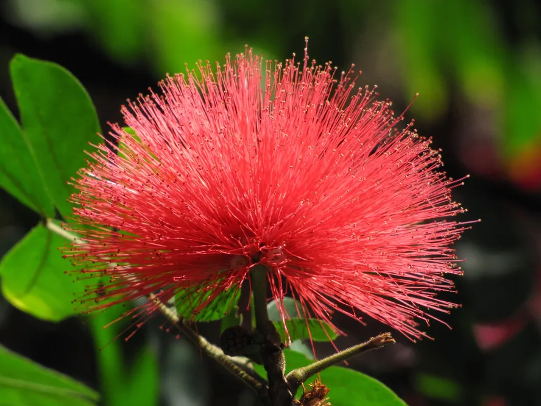

A Caliandra Rosa tem origem nas regiões tropicais das Américas, com foco especial no Cerrado brasileiro e na Mata Atlântica. Essa espécie nativa é uma leguminosa conhecida por sua beleza, com flores em forma de pompom, e é adaptada a climas mais quentes, sendo sensível a temperaturas muito baixas
